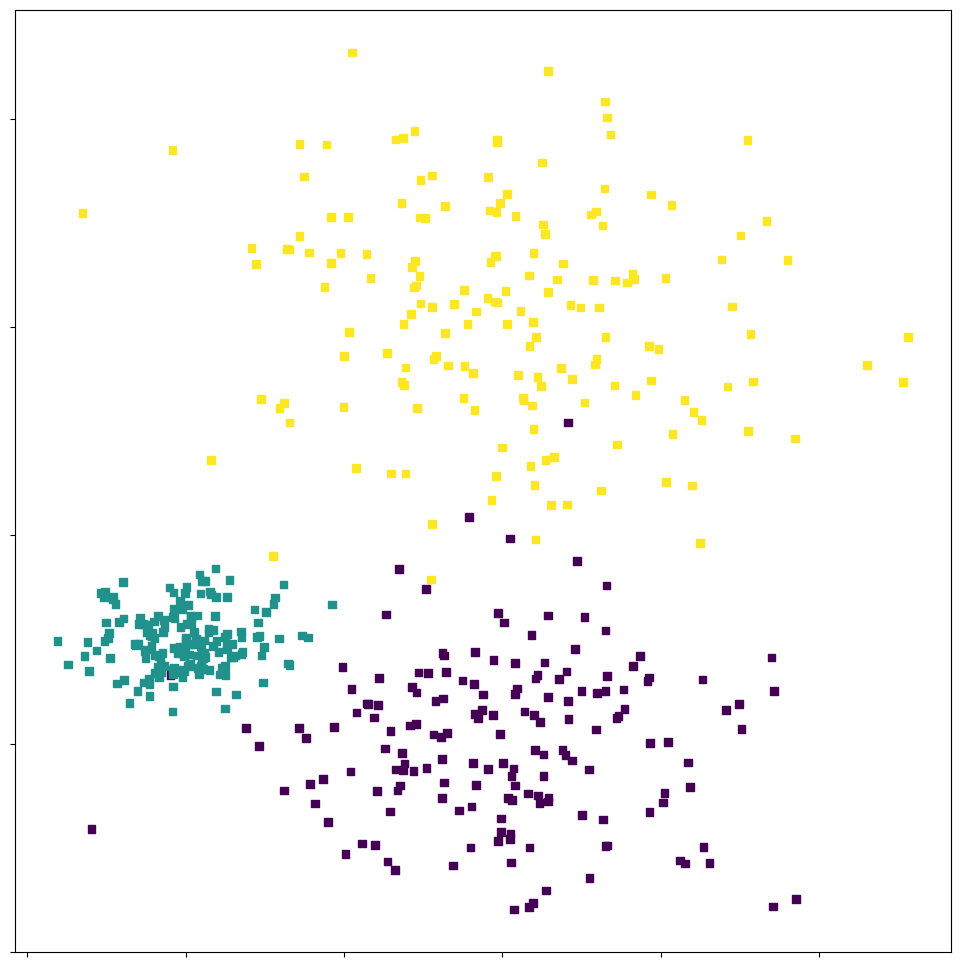
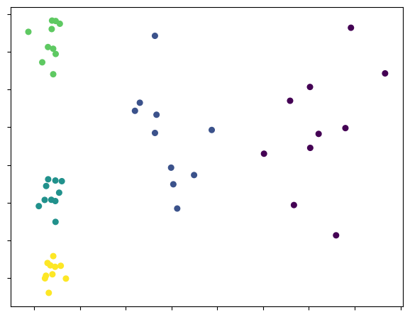
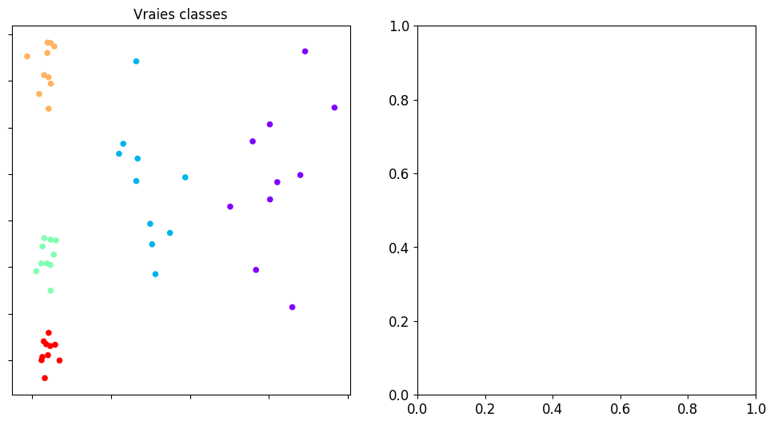
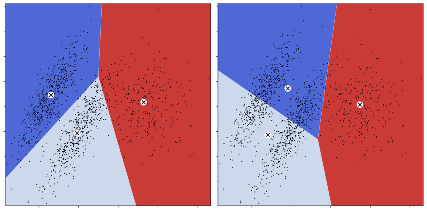

Génération d’un nuage de points
Contents
from __future__ import division, print_function, unicode_literals
import numpy as np
import matplotlib
import matplotlib.pyplot as plt
# Affichage et sauvegarde des figures
%matplotlib inline
plt.rcParams['axes.labelsize'] = 12
plt.rcParams['xtick.labelsize'] = 12
plt.rcParams['ytick.labelsize'] = 12
import warnings
warnings.filterwarnings("ignore")
Génération d’un nuage de points#
from sklearn.datasets import make_blobs
center = np.array(
[[ 3, 0],[1 , 1],[3, 4]])
cluster_std = np.array([0.8, 0.3, 1])
X, y = make_blobs(n_samples=500,centers=center,cluster_std = cluster_std, random_state=42)
mark = 500*["."]
plt.figure(figsize=(10,10))
plt.scatter(X[:, 0], X[:, 1], c=y, marker = "s",s=30)
plt.tight_layout()
plt.tick_params(labelbottom=False)
plt.tick_params(labelleft=False)

Génération d’un nuage de points à classer#
from ipywidgets import interact, interactive, IntSlider, Layout, interact_manual
import ipywidgets as widgets
from IPython.display import display
from sklearn.datasets import make_blobs
def func_gen(nb_points):
center = np.array(
[[ 0.2, 2.3],
[-1.5 , 2.3],
[-2.8, 1.8],
[-2.8, 2.8],
[-2.8, 1.3]])
cluster_std = np.array([0.4, 0.3, 0.1, 0.1, 0.1])
X, y = make_blobs(n_samples=nb_points, centers=center,cluster_std = cluster_std,random_state=42)
plt.scatter(X[:, 0], X[:, 1], c=y, s=30);
plt.tight_layout()
plt.tick_params(labelbottom=False)
plt.tick_params(labelleft=False)
return (X,y)
Définition des données#
p=interactive(func_gen,nb_points={'50 points':50,'200 points':200,'500 points':500,'1000 points':1000})
display(p)

X,y = p.result
from sklearn.cluster import KMeans
def func_fit(nb_classes,nb_init,center_init):
model = KMeans(n_clusters=nb_classes,n_init=nb_init,init=center_init)
plt.figure(figsize=(12,6))
plt.subplot(121)
plt.scatter(X[:, 0], X[:, 1],c=y, s=30,linewidths=0,cmap=plt.cm.rainbow)
plt.title("Vraies classes")
plt.tick_params(labelbottom=False)
plt.tick_params(labelleft=False)
plt.subplot(122)
model.fit(X)
plt.scatter(X[:, 0], X[:, 1], c=model.labels_, s=30,linewidths=0, cmap=plt.cm.rainbow)
plt.title("K means à {0:d} classes".format(nb_classes))
plt.tick_params(labelbottom=False)
plt.tick_params(labelleft=False)
plt.tight_layout()
return (X,y)
p=interactive(func_fit,nb_classes=(2,10,1),nb_init=(10,50,5),center_init=['k-means++', 'random'])
display(p)

nb_cl = p.kwargs['nb_classes']
Convergence vers un minimum local#
def plot_data(X):
plt.plot(X[:, 0], X[:, 1], 'k.', markersize=2)
def plot_centroids(centroids, weights=None, circle_color='w', cross_color='k'):
if weights is not None:
centroids = centroids[weights > weights.max() / 10]
plt.scatter(centroids[:, 0], centroids[:, 1],
marker='o', s=30, linewidths=8,
color=circle_color, zorder=10, alpha=0.9)
plt.scatter(centroids[:, 0], centroids[:, 1],
marker='x', s=50, linewidths=50,
color=cross_color, zorder=11, alpha=1)
def plot_decision_boundaries(clusterer, X, resolution=1000, show_centroids=True):
mins = X.min(axis=0) - 0.1
maxs = X.max(axis=0) + 0.1
xx, yy = np.meshgrid(np.linspace(mins[0], maxs[0], resolution),
np.linspace(mins[1], maxs[1], resolution))
Z = clusterer.predict(np.c_[xx.ravel(), yy.ravel()])
Z = Z.reshape(xx.shape)
plt.contourf(Z, extent=(mins[0], maxs[0], mins[1], maxs[1]),
cmap="coolwarm")
plot_data(X)
if show_centroids:
plot_centroids(clusterer.cluster_centers_)
plt.tick_params(labelbottom=False)
plt.tick_params(labelleft=False)
plt.figure(figsize=(12,6))
plt.subplot(121)
kmeans1 = KMeans(n_clusters=nb_cl, init="random", n_init=1, random_state=41)
kmeans1.fit(X)
plot_decision_boundaries(kmeans1, X)
plt.title("Init1")
plt.subplot(122)
kmeans2 = KMeans(n_clusters=nb_cl, init="random", n_init=1, random_state=43)
kmeans2.fit(X)
plot_decision_boundaries(kmeans2, X)
plt.title("Init2")
plt.tight_layout()
plt.savefig("images/init.png",dpi=100)
plt.show()
---------------------------------------------------------------------------
AttributeError Traceback (most recent call last)
Input In [9], in <module>
2 plt.subplot(121)
3 kmeans1 = KMeans(n_clusters=nb_cl, init="random", n_init=1, random_state=41)
----> 4 kmeans1.fit(X)
5 plot_decision_boundaries(kmeans1, X)
6 plt.title("Init1")
File /usr/local/lib/python3.9/site-packages/sklearn/cluster/_kmeans.py:1455, in KMeans.fit(self, X, y, sample_weight)
1453 else:
1454 kmeans_single = _kmeans_single_lloyd
-> 1455 self._check_mkl_vcomp(X, X.shape[0])
1457 best_inertia, best_labels = None, None
1459 for i in range(self._n_init):
1460 # Initialize centers
File /usr/local/lib/python3.9/site-packages/sklearn/cluster/_kmeans.py:911, in _BaseKMeans._check_mkl_vcomp(self, X, n_samples)
909 n_active_threads = int(np.ceil(n_samples / CHUNK_SIZE))
910 if n_active_threads < self._n_threads:
--> 911 modules = threadpool_info()
912 has_vcomp = "vcomp" in [module["prefix"] for module in modules]
913 has_mkl = ("mkl", "intel") in [
914 (module["internal_api"], module.get("threading_layer", None))
915 for module in modules
916 ]
File /usr/local/lib/python3.9/site-packages/sklearn/utils/fixes.py:162, in threadpool_info()
160 return controller.info()
161 else:
--> 162 return threadpoolctl.threadpool_info()
File /usr/local/lib/python3.9/site-packages/threadpoolctl.py:124, in threadpool_info()
107 @_format_docstring(USER_APIS=list(_ALL_USER_APIS),
108 INTERNAL_APIS=_ALL_INTERNAL_APIS)
109 def threadpool_info():
110 """Return the maximal number of threads for each detected library.
111
112 Return a list with all the supported modules that have been found. Each
(...)
122 In addition, each module may contain internal_api specific entries.
123 """
--> 124 return _ThreadpoolInfo(user_api=_ALL_USER_APIS).todicts()
File /usr/local/lib/python3.9/site-packages/threadpoolctl.py:340, in _ThreadpoolInfo.__init__(self, user_api, prefixes, modules)
337 self.user_api = [] if user_api is None else user_api
339 self.modules = []
--> 340 self._load_modules()
341 self._warn_if_incompatible_openmp()
342 else:
File /usr/local/lib/python3.9/site-packages/threadpoolctl.py:371, in _ThreadpoolInfo._load_modules(self)
369 """Loop through loaded libraries and store supported ones"""
370 if sys.platform == "darwin":
--> 371 self._find_modules_with_dyld()
372 elif sys.platform == "win32":
373 self._find_modules_with_enum_process_module_ex()
File /usr/local/lib/python3.9/site-packages/threadpoolctl.py:428, in _ThreadpoolInfo._find_modules_with_dyld(self)
425 filepath = filepath.decode("utf-8")
427 # Store the module if it is supported and selected
--> 428 self._make_module_from_path(filepath)
File /usr/local/lib/python3.9/site-packages/threadpoolctl.py:515, in _ThreadpoolInfo._make_module_from_path(self, filepath)
513 if prefix in self.prefixes or user_api in self.user_api:
514 module_class = globals()[module_class]
--> 515 module = module_class(filepath, prefix, user_api, internal_api)
516 self.modules.append(module)
File /usr/local/lib/python3.9/site-packages/threadpoolctl.py:606, in _Module.__init__(self, filepath, prefix, user_api, internal_api)
604 self.internal_api = internal_api
605 self._dynlib = ctypes.CDLL(filepath, mode=_RTLD_NOLOAD)
--> 606 self.version = self.get_version()
607 self.num_threads = self.get_num_threads()
608 self._get_extra_info()
File /usr/local/lib/python3.9/site-packages/threadpoolctl.py:646, in _OpenBLASModule.get_version(self)
643 get_config = getattr(self._dynlib, "openblas_get_config",
644 lambda: None)
645 get_config.restype = ctypes.c_char_p
--> 646 config = get_config().split()
647 if config[0] == b"OpenBLAS":
648 return config[1].decode("utf-8")
AttributeError: 'NoneType' object has no attribute 'split'
Cas de données non sphériques#
Dans le cas de l’utilisation de la distance euclidienne, les nuages sont implicitement supposés sphériques. Cela peut conduire le k-means à une mauvaise interprétation du nuage de points
X1, y1 = make_blobs(n_samples=1000, centers=((4, -4), (0, 0)), random_state=42)
X1 = X1.dot(np.array([[0.374, 0.95], [0.732, 0.598]]))
X2, y2 = make_blobs(n_samples=250, centers=1, random_state=42)
X2 = X2 + [6, -8]
X = np.r_[X1, X2]
y = np.r_[y1, y2]
# Classification prenant en compte lse données
kmeans1 = KMeans(n_clusters=3, init=np.array([[-1.5, 2.5], [0.5, 0], [4, 0]]), n_init=1, random_state=42)
# classification sans a priori
kmeans2 = KMeans(n_clusters=3, random_state=42)
kmeans1.fit(X)
kmeans2.fit(X);
plt.figure(figsize=(12, 6))
plt.subplot(121)
plot_decision_boundaries(kmeans1, X)
plt.subplot(122)
plot_decision_boundaries(kmeans2, X)
plt.tight_layout()
plt.show()

Illustration en classification d’images#
Pour illustration, on peut appliquer l’algorithme des Kmeans aux données MNIST.
from sklearn.datasets import fetch_openml
Xmnist, ymnist= fetch_openml('mnist_784', version=1, return_X_y=True)
ymnist=ymnist.astype(int)
kmeans = KMeans(n_clusters=10, random_state=0)
clusters = kmeans.fit_predict(Xmnist)
kmeans.cluster_centers_.shape
# Centres de classe
fig, ax = plt.subplots(2, 5, figsize=(8, 3))
centers = kmeans.cluster_centers_.reshape(10, 28, 28)
for axi, center in zip(ax.flat, centers):
axi.set(xticks=[], yticks=[])
axi.imshow(center, interpolation='nearest', cmap=plt.cm.binary)
---------------------------------------------------------------------------
AttributeError Traceback (most recent call last)
Input In [4], in <module>
3 ymnist=ymnist.astype(int)
5 kmeans = KMeans(n_clusters=10, random_state=0)
----> 6 clusters = kmeans.fit_predict(Xmnist)
7 kmeans.cluster_centers_.shape
9 # Centres de classe
File /usr/local/lib/python3.9/site-packages/sklearn/cluster/_kmeans.py:1033, in _BaseKMeans.fit_predict(self, X, y, sample_weight)
1010 def fit_predict(self, X, y=None, sample_weight=None):
1011 """Compute cluster centers and predict cluster index for each sample.
1012
1013 Convenience method; equivalent to calling fit(X) followed by
(...)
1031 Index of the cluster each sample belongs to.
1032 """
-> 1033 return self.fit(X, sample_weight=sample_weight).labels_
File /usr/local/lib/python3.9/site-packages/sklearn/cluster/_kmeans.py:1468, in KMeans.fit(self, X, y, sample_weight)
1465 print("Initialization complete")
1467 # run a k-means once
-> 1468 labels, inertia, centers, n_iter_ = kmeans_single(
1469 X,
1470 sample_weight,
1471 centers_init,
1472 max_iter=self.max_iter,
1473 verbose=self.verbose,
1474 tol=self._tol,
1475 n_threads=self._n_threads,
1476 )
1478 # determine if these results are the best so far
1479 # we chose a new run if it has a better inertia and the clustering is
1480 # different from the best so far (it's possible that the inertia is
1481 # slightly better even if the clustering is the same with potentially
1482 # permuted labels, due to rounding errors)
1483 if best_inertia is None or (
1484 inertia < best_inertia
1485 and not _is_same_clustering(labels, best_labels, self.n_clusters)
1486 ):
File /usr/local/lib/python3.9/site-packages/sklearn/cluster/_kmeans.py:679, in _kmeans_single_lloyd(X, sample_weight, centers_init, max_iter, verbose, tol, n_threads)
675 strict_convergence = False
677 # Threadpoolctl context to limit the number of threads in second level of
678 # nested parallelism (i.e. BLAS) to avoid oversubscription.
--> 679 with threadpool_limits(limits=1, user_api="blas"):
680 for i in range(max_iter):
681 lloyd_iter(
682 X,
683 sample_weight,
(...)
689 n_threads,
690 )
File /usr/local/lib/python3.9/site-packages/sklearn/utils/fixes.py:151, in threadpool_limits(limits, user_api)
149 return controller.limit(limits=limits, user_api=user_api)
150 else:
--> 151 return threadpoolctl.threadpool_limits(limits=limits, user_api=user_api)
File /usr/local/lib/python3.9/site-packages/threadpoolctl.py:171, in threadpool_limits.__init__(self, limits, user_api)
167 def __init__(self, limits=None, user_api=None):
168 self._limits, self._user_api, self._prefixes = \
169 self._check_params(limits, user_api)
--> 171 self._original_info = self._set_threadpool_limits()
File /usr/local/lib/python3.9/site-packages/threadpoolctl.py:268, in threadpool_limits._set_threadpool_limits(self)
265 if self._limits is None:
266 return None
--> 268 modules = _ThreadpoolInfo(prefixes=self._prefixes,
269 user_api=self._user_api)
270 for module in modules:
271 # self._limits is a dict {key: num_threads} where key is either
272 # a prefix or a user_api. If a module matches both, the limit
273 # corresponding to the prefix is chosed.
274 if module.prefix in self._limits:
File /usr/local/lib/python3.9/site-packages/threadpoolctl.py:340, in _ThreadpoolInfo.__init__(self, user_api, prefixes, modules)
337 self.user_api = [] if user_api is None else user_api
339 self.modules = []
--> 340 self._load_modules()
341 self._warn_if_incompatible_openmp()
342 else:
File /usr/local/lib/python3.9/site-packages/threadpoolctl.py:371, in _ThreadpoolInfo._load_modules(self)
369 """Loop through loaded libraries and store supported ones"""
370 if sys.platform == "darwin":
--> 371 self._find_modules_with_dyld()
372 elif sys.platform == "win32":
373 self._find_modules_with_enum_process_module_ex()
File /usr/local/lib/python3.9/site-packages/threadpoolctl.py:428, in _ThreadpoolInfo._find_modules_with_dyld(self)
425 filepath = filepath.decode("utf-8")
427 # Store the module if it is supported and selected
--> 428 self._make_module_from_path(filepath)
File /usr/local/lib/python3.9/site-packages/threadpoolctl.py:515, in _ThreadpoolInfo._make_module_from_path(self, filepath)
513 if prefix in self.prefixes or user_api in self.user_api:
514 module_class = globals()[module_class]
--> 515 module = module_class(filepath, prefix, user_api, internal_api)
516 self.modules.append(module)
File /usr/local/lib/python3.9/site-packages/threadpoolctl.py:606, in _Module.__init__(self, filepath, prefix, user_api, internal_api)
604 self.internal_api = internal_api
605 self._dynlib = ctypes.CDLL(filepath, mode=_RTLD_NOLOAD)
--> 606 self.version = self.get_version()
607 self.num_threads = self.get_num_threads()
608 self._get_extra_info()
File /usr/local/lib/python3.9/site-packages/threadpoolctl.py:646, in _OpenBLASModule.get_version(self)
643 get_config = getattr(self._dynlib, "openblas_get_config",
644 lambda: None)
645 get_config.restype = ctypes.c_char_p
--> 646 config = get_config().split()
647 if config[0] == b"OpenBLAS":
648 return config[1].decode("utf-8")
AttributeError: 'NoneType' object has no attribute 'split'
Certains chiffres sont facilement reconnaissables, certains sont oubliés. Kmeans est une méthode trop simple (séparation linéaire) pour aborder de manière efficace ce type de problème. De plus, étant basé sur EM, il est assuré de converger, mais seulement vers un minimum local.